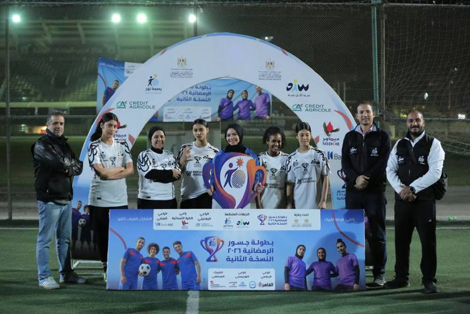
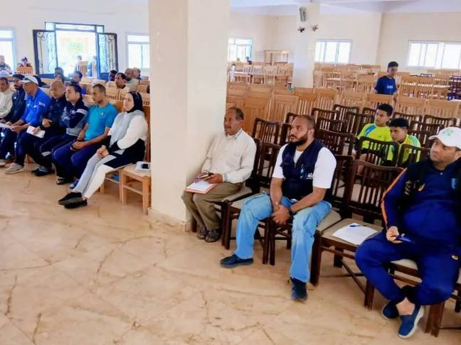
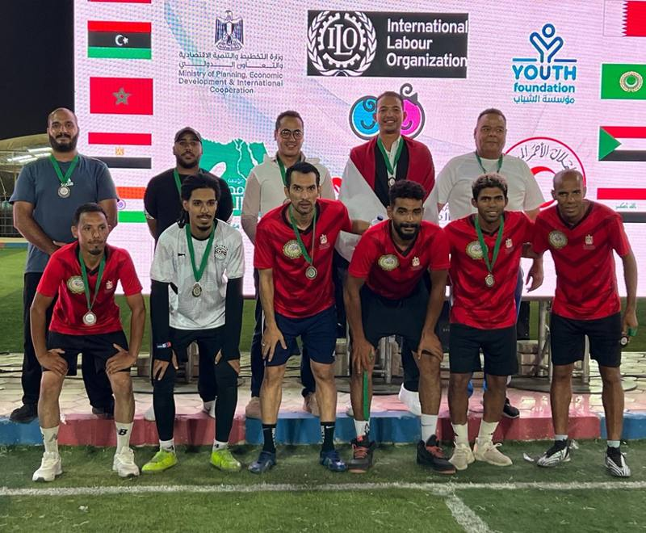
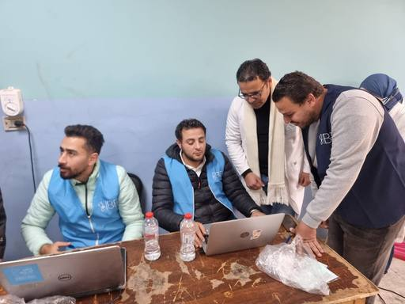
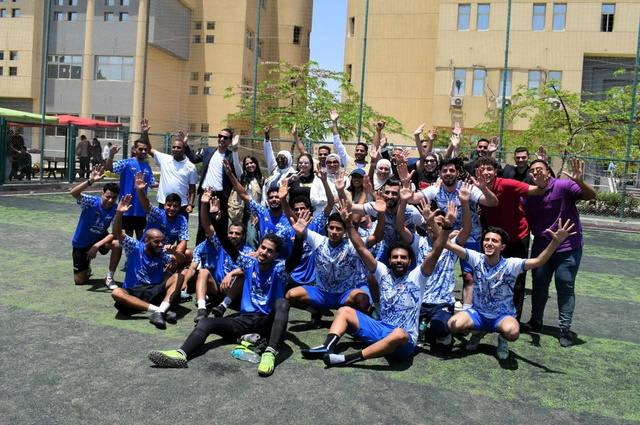
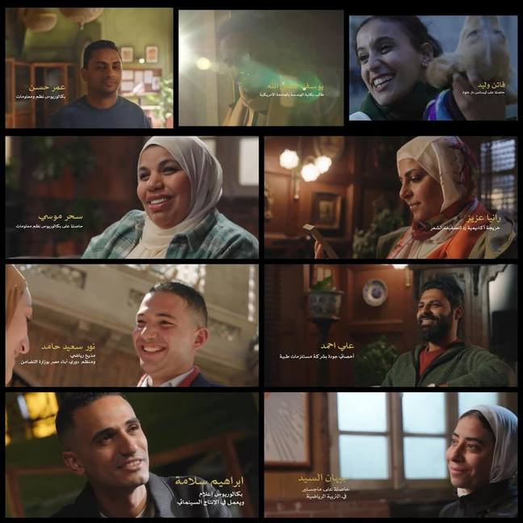
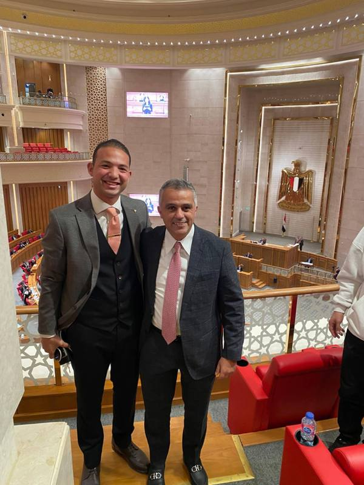

من الملعب إلى قاعات صنع القرار: ما نفذناه مع شباب دور الرعاية وأسرهم، بالصور.
نظمنا بطولة جسور الرمضانية 2026 بمشاركة 282 لاعباً ولاعبة من 23 دار رعاية. وشاركنا في تنظيم معسكر المشروع القومي للأيتام برأس البر، بدعوة من وزارة الشباب والرياضة، بحضور 400 طفل من 27 محافظة. وحصل فريق الجمعية على المركز الثالث في كأس جامعة الدول العربية.








وزعنا 150 وجبة ساخنة يومياً على مدار 29 يوماً في رمضان، إلى جانب شنط رمضان، لخريجي دور الأيتام وأسرهم في المعادي وبدر و15 مايو والسلام والعبور. ووفرنا 160 قطعة أثاث، ونظمنا قافلة طبية بالتنسيق مع مؤسسة إبراهيم أحمد بدران استفاد منها 120 مستفيداً.




رصدنا أكثر من 70 تغطية إعلامية وصحفية في منصات تلفزيونية ورقمية ومطبوعة. ونفذنا حملات توعية وأيام رياضية في 3 مدارس و7 جامعات، وشاركنا في بودكاست هنا التضامن، وفي حلقة وثائقية بمسلسل أولاد الشمس في دراما رمضان 2025. وبالشراكة مع مؤسسة Dialogue in the Dark نظمنا رحلات توعوية لـ 180 مستفيداً، وعقدنا يوماً للتوعية وورشة آداب زيارة دور الأيتام بشركة ميدور للبترول.







لبّينا دعوة رسمية داخل مجلس النواب لتمثيل الشباب الأيتام، وعقدنا لقاءات مع قيادات وزارتي التضامن الاجتماعي والشباب والرياضة لنقل تجربة الشباب لصناع القرار. وشاركنا في سيمنار مؤسسة ساموسيال بالتعاون مع الاتحاد الأوروبي حول الأمهات البديلات في خطر الشارع.




وفرنا أكثر من 150 فرصة عمل لشباب دور الرعاية. وبالتعاون مع الجامعة الفرنسية في مصر قدمنا دورات Soft Skills وICDL لشباب الدور، ونجح منهم 20 شاباً وتسلموا شهادات التخرج. وحصلنا على 35 دعوة رسمية للمشاركة في قمة ستارت بالمتحف المصري للتدريب وتوفير فرص العمل.


شارك متطوعو بصمة نور في اليوم التطوعي الذي نظمته شركة ميدور للبترول بدار السندس للأيتام.

للشراكة أو الرعاية أو التطوع، تواصل معنا على basmatnour.org@gmail.com